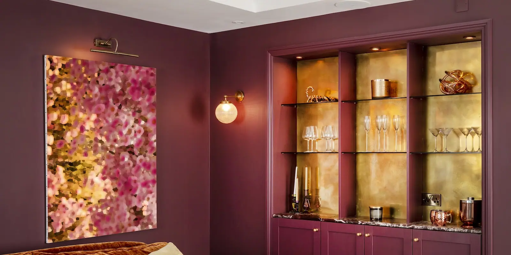
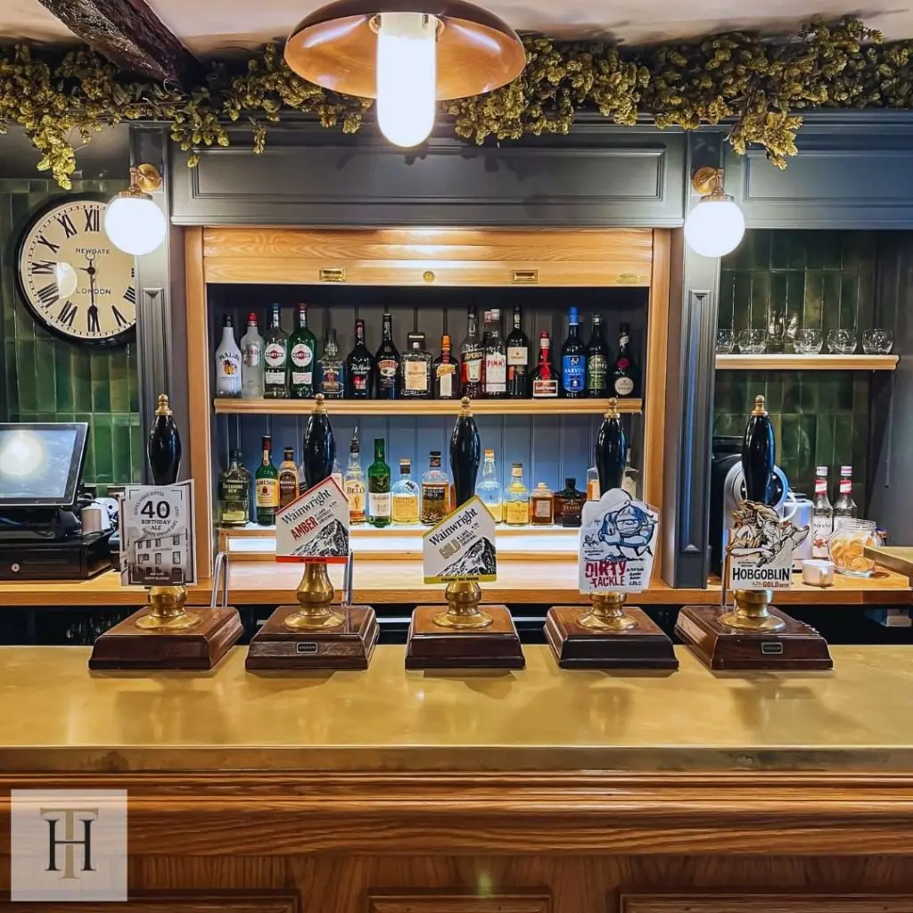

Brass bar tops offer an ageless charm that no modern material can compete with. Alongside a rich character, brass epitomises longevity, low maintenance and attractive aesthetics. Brass bar tops can fit seamlessly into almost any design scheme!
Brass bar tops look amazing in bars, restaurants, cafes, barber shops, antique shops and anywhere that wants the ageless quality only brass can deliver.


Cut to size
Each of our bespoke finishes can be purchased in sheets cut to your size, perfect for your project.
- Pricing includes delivery and turnaround time is just 5-8 weeks
- Each piece is coated in a gloss finish lacquer that prevents the sheet from further aging
Ready to go
We can provide bespoke cut metal with each of our finishes being wrapped around wood and lacquer finished. Please get in touch for a bespoke quote .
Handmade Brass Bar Tops
We provide natural or aged brass bar tops in a range of finishes, including:
- Cambridgeshire finish – Rich, luxurious and timeless. The milled brass finish of this brass bar top offers a light aesthetic with a genuine depth of character.
- Natural brass – Natural brass offers a darker, more sultry patina ideal in a range of situations where it’s characteristics can be truly appreciated.
- Somerset finish – Lustrous, complex and delightful, three words we often hear about this unique Somerset finish.
- Wiltshire finish – Aged brass at its best with a speckled patina, light appearance and wide appeal. This finish could work anywhere!
Natural brass can be optionally finished with lacquer for an extra layer of protection. Aged brass bar tops will all be finished in lacquer to stop the ageing process and protect its character.
BESPOKE BRASS BAR TOPS
Each of our lovely brass bar tops is handmade to your exact specifications. They can be supplied as sheets for you to install or as complete bar tops ready to go.
We can cut all brass bar tops to size too.
Each begins as a sheet of brass. The sheet is cut to size, prepared to your desired finish and then lacquered, or not. Sheets will then be dispatched or fitted to a bar top ready for installation.
Aged brass bar tops are artificially aged by hand until they reach the desired patina. Our craftsmen then stop the ageing process and seal the bar top in tough lacquer.
The lacquer stops the ageing process as well as providing a tough surface to help preserve the look and feel of the brass.
LOOKING AFTER YOUR BRASS BAR TOP
One of the many benefits of brass is that it is very low maintenance. Combined with our special lacquer, your brass bar top should need very little looking after.
You’ll receive full care instructions with every order, but all you need to do is clean with soapy water and a soft cloth to remove dirt and debris and dry down.
Avoid harsh chemicals and abrasives as this will accelerate lacquer wear.
Order your handmade brass bar tops today . There’s nothing quite like them!


If you can dream it, we’ll make it.
Bars, balustrades, staircases, worktops, cladding and pieces that don’t have a name yet. Our designers and craftspeople work in brass, copper, zinc and steel, and alongside wood.